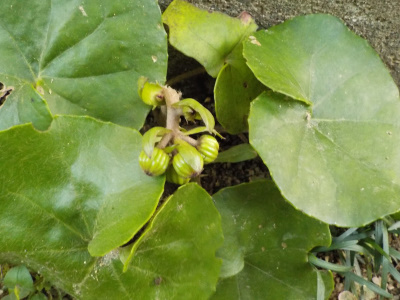
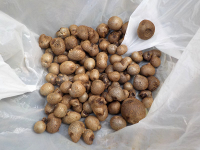
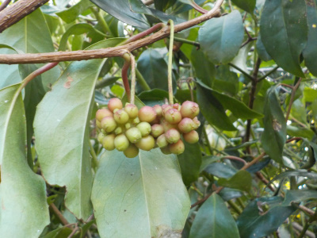
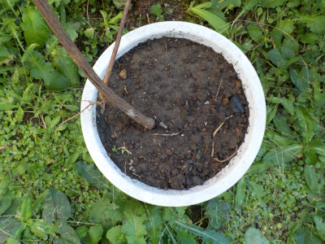
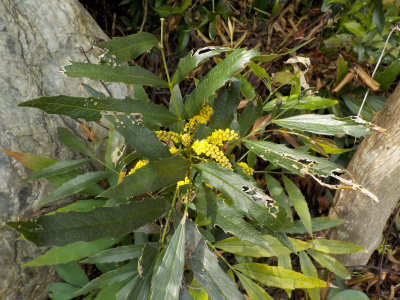
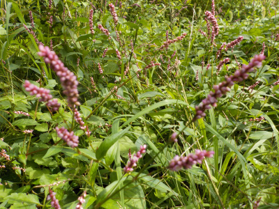
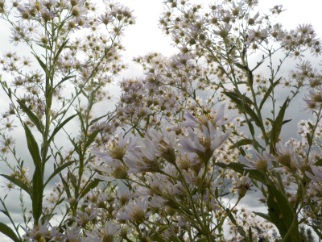
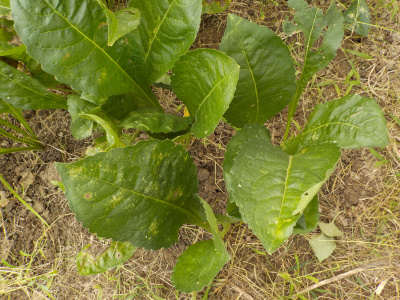
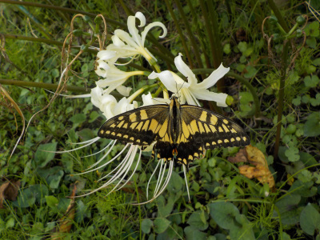

ツワブキの小さいのにツボミがありました。
2023/10/15

葉っぱがキレイだなと思い抜かずにいたらツボミを付けていました。
この草丈をキープ出来たら抜かずに置いておけるんだけどな。
2023/10/15

葉っぱがキレイだなと思い抜かずにいたらツボミを付けていました。
この草丈をキープ出来たら抜かずに置いておけるんだけどな。
2023/10/15

いつも9月くらいに収穫するんですが、忘れていました。
大きいのは落ちたみたいで小粒が多いです。
塩ゆでして食べようと思います。
2023/10/15

シキミにツルが巻き付いていたので取りました。
検索したらサカネカズラで、赤い実が鑑賞になるそうです。

赤い実を見たかったなー。
来年見れるかもと思い、サカネカズラの根っこ部分を鉢に植えました。枯れないといいです。
2023/10/09

スズメバチが飛んでいるのが気になって見たら、ホソバヒイラギナンテンの花がありました。
スズメバチが集まって危ないので切ったんですけど、再生したみたいです。
2023/10/09

雑草ですが、まとまって生えてるとキレイですね。草丈が低くて邪魔にならないので、放置しようと思っています。
2023/10/09

シオンは背が高くて花が多いので見栄えがいいですが、曇り空だといまいちですね。

株元には小さいのが出来ていました。ここで育ったら密になりますね。
後、連作障害になると思ったら違う場所に植え替えた方がいいんだろうな。
2023/10/01

近づいても何の反応もしないので、多分体力の限界でしょう。
秋ですね。
過去の日記
畑仕事じゃないよ。